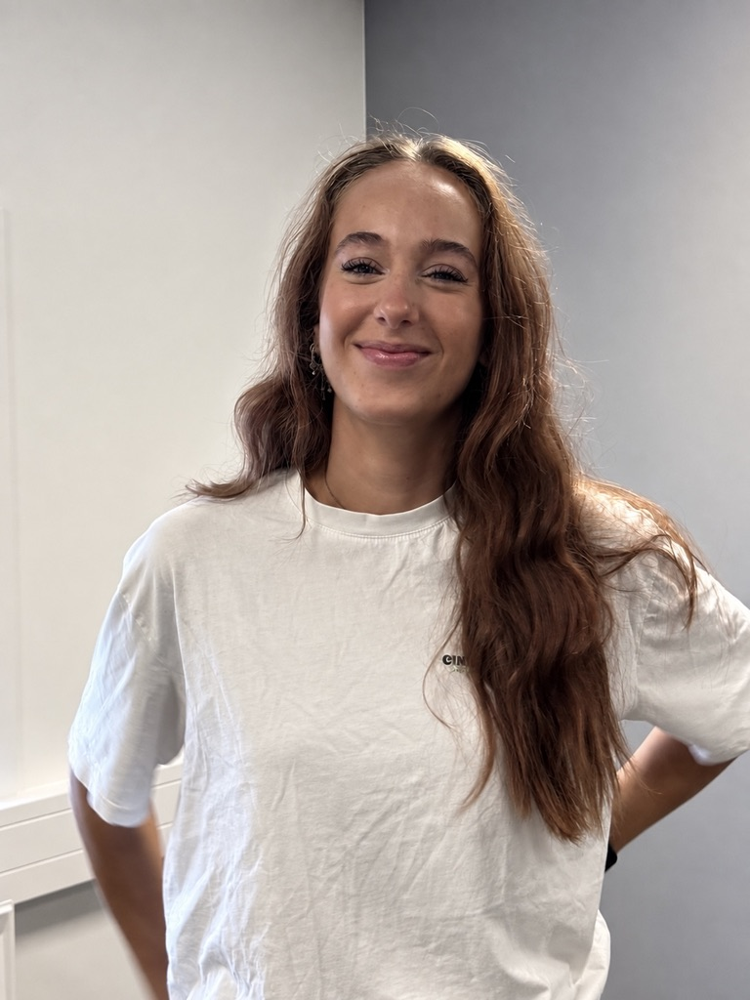
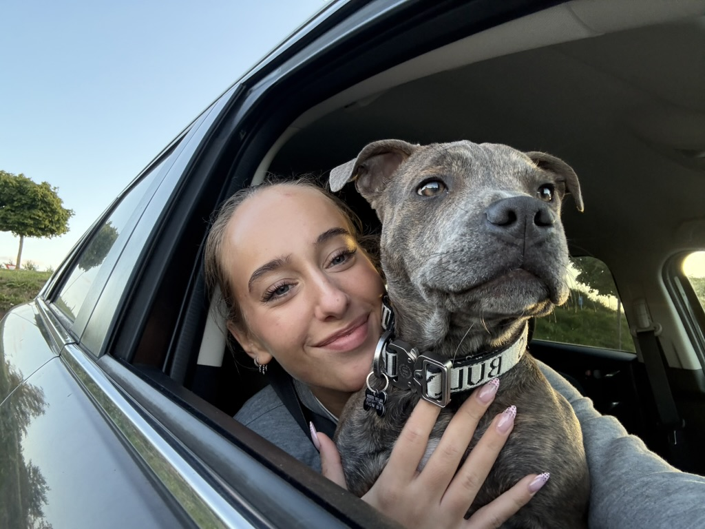
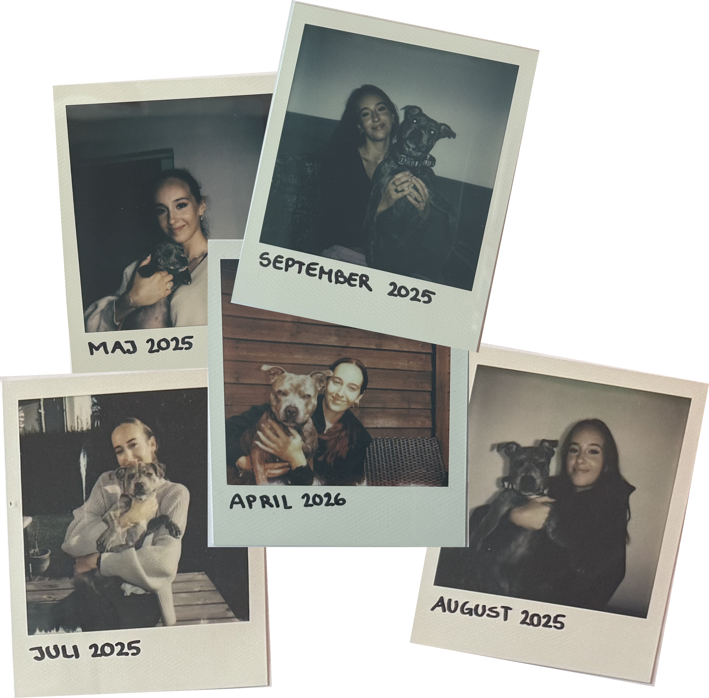

om mig
Mit navn er Ann-Sofie Solsbæk, jeg er 23 år, lever med ADHD og er bosat i Aarhus N.
I min fritid arbejder jeg i Elgiganten, hvor jeg har været de sidste 7 år, ellers bruger jeg størstedelen af min fritid på min hund Tyson, min familie, venner og veninder.
Jeg vil beskrive mig selv som en usleben diamant, som har brug for en der kan forme og gøre mig klar til det store marked.

fun fact
om mig selvfølgeligJeg elsker hunde, og en af mine drømme er at arbejde med hunde på den ene eller anden måde, når jeg bliver ældre...
Jeg har selv købt en dejlig Staffy tilbage i maj 2025, som jeg nu bor sammen med.
Ham har vi lavet en Instagramprofil til ved navn @tigertyson_staffy. Den bruger jeg som et digitalt fotoalbum, hvor både mig og 600+ andre følger hans opvækst <3
